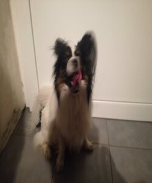

|  |
MaxPapillon Geboren am 18.05.2017
|
Max ist ein Papillon.
Er hört sehr gut, will immer spielen und hasst es einfach nur zu liegen.
Max hasst es zu duschen und mag andere Hunde nicht. Er hat 8 Kinder. Einige der Kinder haben sehr viel Ähnlichkeit zu Max.
|
|